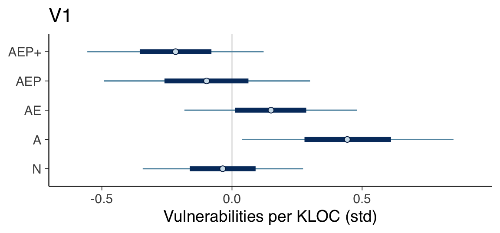
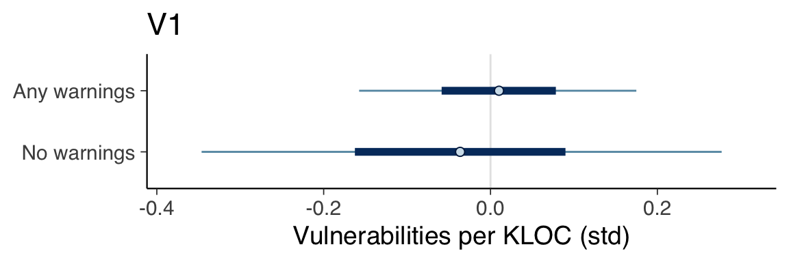

Chapter 11 Vulnerabilities
This section covers the analysis relating to the “vulnerabilities” metric.
11.1 Prepare data
# The model seed is the date that the analysis was conducted
model_seed <- 20230330
create_vulnerabilities_data <- function(data) {
list(
vulnerabilities_kloc_std=scale(data$vulnerabilities_kloc),
contributors_std=scale(data$contributors),
stars_std=scale(data$stars),
files_std=scale(data$files),
size_std=scale(data$loc),
age_std=scale(get_age(data$created_at))
)
}
# Prepare data with all categories as factors (1-11).
data <- create_vulnerabilities_data(df)
data$category <- factor(df$category)
# Prepare data that factors on the presence of compiler warnings
data_factor_uses_warnings <- create_vulnerabilities_data(df)
data_factor_uses_warnings$category <- factor(uses_warnings(df$category))11.2 Define models
11.2.1 V1
fit_model_v1 <- function(name, data) {
fit_model(name,
"vulnerabilities_kloc_std ~ 0 + category",
c(
prior(normal(0, 1), class=b),
prior(exponential(1), class=sigma)
),
data,
model_seed)
}
v1 <- fit_model_v1("v1", data)11.2.2 V2
fit_model_v2 <- function(name, data) {
fit_model(name,
"vulnerabilities_kloc_std ~ 0 + category + contributors_std",
c(
prior(normal(0, 1), class=b),
prior(normal(0, 1), class=b, coef="contributors_std"),
prior(exponential(1), class=sigma)
),
data,
model_seed)
}
v2 <- fit_model_v2("v2", data)11.2.3 V3
fit_model_v3 <- function(name, data) {
fit_model(name,
"vulnerabilities_kloc_std ~ 0 + category + stars_std",
c(
prior(normal(0, 1), class=b),
prior(normal(0, 1), class=b, coef="stars_std"),
prior(exponential(1), class=sigma)
),
data,
model_seed)
}
v3 <- fit_model_v3("v3", data)11.2.4 V4
fit_model_v4 <- function(name, data) {
fit_model(name,
"vulnerabilities_kloc_std ~ 0 + category + age_std",
c(
prior(normal(0, 1), class=b),
prior(normal(0, 1), class=b, coef="age_std"),
prior(exponential(1), class=sigma)
),
data,
model_seed)
}
v4 <- fit_model_v4("v4", data)11.2.5 V5
fit_model_v5 <- function(name, data) {
fit_model(name,
"vulnerabilities_kloc_std ~ 0 + category + size_std",
c(
prior(normal(0, 1), class=b),
prior(normal(0, 1), class=b, coef="size_std"),
prior(exponential(1), class=sigma)
),
data,
model_seed)
}
v5 <- fit_model_v5("v5", data)11.2.6 V6
fit_model_v6 <- function(name, data) {
fit_model(name,
"vulnerabilities_kloc_std ~ 0 + category + files_std",
c(
prior(normal(0, 1), class=b),
prior(normal(0, 1), class=b, coef="files_std"),
prior(exponential(1), class=sigma)
),
data,
model_seed)
}
v6 <- fit_model_v6("v6", data)11.2.7 V7
fit_model_v7 <- function(name, data) {
fit_model(name,
"vulnerabilities_kloc_std ~ 0 + category + contributors_std + age_std",
c(
prior(normal(0, 1), class=b),
prior(normal(0, 1), class=b, coef="contributors_std"),
prior(normal(0, 1), class=b, coef="age_std"),
prior(exponential(1), class=sigma)
),
data,
model_seed)
}
v7 <- fit_model_v7("v7", data)11.2.8 V8
fit_model_v8 <- function(name, data) {
fit_model(name,
"vulnerabilities_kloc_std ~ 0 + category + contributors_std + size_std",
c(
prior(normal(0, 1), class=b),
prior(normal(0, 1), class=b, coef="contributors_std"),
prior(normal(0, 1), class=b, coef="size_std"),
prior(exponential(1), class=sigma)
),
data,
model_seed)
}
v8 <- fit_model_v8("v8", data)11.3 Compare models
v1 <- add_criterion(v1, criterion="loo", moment_match=TRUE)
v2 <- add_criterion(v2, criterion="loo", moment_match=TRUE)
v3 <- add_criterion(v3, criterion="loo", moment_match=TRUE)
v4 <- add_criterion(v4, criterion="loo", moment_match=TRUE)
v5 <- add_criterion(v5, criterion="loo", moment_match=TRUE)
v6 <- add_criterion(v6, criterion="loo", moment_match=TRUE)
v7 <- add_criterion(v7, criterion="loo", moment_match=TRUE)
v8 <- add_criterion(v8, criterion="loo", moment_match=TRUE)
print(loo_compare(v1, v2, v3, v4, v5, v6, v7, v8, criterion="loo"),
simplify=FALSE)## elpd_diff se_diff elpd_loo se_elpd_loo p_loo se_p_loo looic se_looic
## v1 0.0 0.0 -203.7 53.4 31.0 26.3 407.4 106.9
## v6 0.0 0.9 -203.7 52.8 32.0 26.3 407.5 105.5
## v4 -0.2 1.5 -203.9 52.4 31.7 25.8 407.8 104.9
## v5 -0.5 0.8 -204.2 52.8 32.1 26.4 408.5 105.6
## v3 -0.7 0.4 -204.3 53.2 32.3 26.7 408.7 106.4
## v2 -0.7 0.4 -204.4 53.1 32.2 26.6 408.8 106.2
## v7 -0.9 1.9 -204.6 52.1 32.2 25.9 409.1 104.2
## v8 -1.0 1.2 -204.7 52.4 31.7 25.5 409.4 104.911.4 Determine natural scale values
summary(v1)## Family: gaussian
## Links: mu = identity; sigma = identity
## Formula: vulnerabilities_kloc_std ~ 0 + category
## Data: data (Number of observations: 127)
## Draws: 4 chains, each with iter = 10000; warmup = 5000; thin = 1;
## total post-warmup draws = 20000
##
## Population-Level Effects:
## Estimate Est.Error l-95% CI u-95% CI Rhat Bulk_ESS Tail_ESS
## category1 -0.04 0.19 -0.40 0.33 1.00 42992 14564
## category2 0.44 0.25 -0.04 0.93 1.00 43805 14930
## category3 0.15 0.20 -0.25 0.55 1.00 43643 15476
## category4 -0.20 0.46 -1.09 0.69 1.00 40645 14176
## category5 -0.10 0.24 -0.57 0.38 1.00 40690 14068
## category6 -0.07 0.34 -0.73 0.59 1.00 45654 15086
## category7 -0.22 0.21 -0.62 0.18 1.00 42059 14592
## category8 -0.12 0.70 -1.49 1.26 1.00 41430 15549
## category9 -0.12 0.70 -1.51 1.25 1.00 43522 15179
## category10 -0.18 0.52 -1.21 0.83 1.00 46680 14348
## category11 -0.13 0.71 -1.51 1.24 1.00 44577 14936
##
## Family Specific Parameters:
## Estimate Est.Error l-95% CI u-95% CI Rhat Bulk_ESS Tail_ESS
## sigma 1.01 0.07 0.89 1.15 1.00 34272 15316
##
## Draws were sampled using sampling(NUTS). For each parameter, Bulk_ESS
## and Tail_ESS are effective sample size measures, and Rhat is the potential
## scale reduction factor on split chains (at convergence, Rhat = 1).print(create_natural_scale_summary_df(v1, df$vulnerabilities_kloc, precision=6))## Mean SD 0.05 CI 0.95 CI
## N 0.006849 0.014115 -0.003162 0.016899
## A 0.022476 0.016060 0.009269 0.035717
## AE 0.012868 0.014587 0.002055 0.023660
## AEP 0.004848 0.015799 -0.008017 0.017773
## AEP+ 0.000951 0.014693 -0.010096 0.01196511.5 Intervals of major categories
plot_intervals_of_major_categories(v1) +
labs(title="V1", x="Vulnerabilities per KLOC (std)")
11.6 Warnings versus no warnings
v1_factor_uses_warnings <- fit_model_v1("v1_factor_uses_warnings",
data_factor_uses_warnings)
plot_intervals_of_categories(v1_factor_uses_warnings) +
labs(title="V1", x="Vulnerabilities per KLOC (std)") +
scale_y_discrete(labels=c(
"b_category1"="No warnings",
"b_category2"="Any warnings"
))